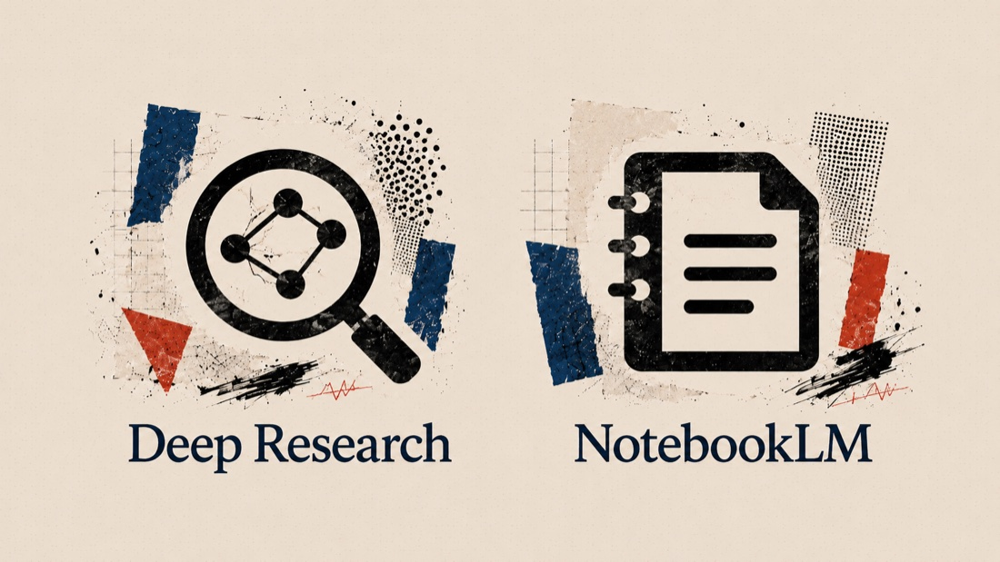

Should I use AI?
This is entirely in your hands. But too often it's presented as the only element of control, and one that should be imposed on everyone.
The state of AI · capability
Modern models have moved beyond word prediction. They plan approaches before generating a response. Recent models have blown through existing evaluations.

The harness is the execution environment. By giving models access to tools (search, terminal, CMS, browser, apps), AI moves from talking about work to doing it.

The synergy of brain + harness creates an "agent". It doesn't wait for your next prompt; it creates a plan, uses tools, and works in a loop until the goal is achieved.


The state of AI · pace
Anthropic have released Fable today. This is the guardrailed version of Mythos. Two things distinguish it. It is more capable of completing highly complex end-to-end projects from a single prompt. And it represents a new level of safeguarding (specifically to stop the model from being used to identify digital vulnerabilities). Early signs suggest this is as big a leap as the one that occurred in November 2025 with Claude Opus 4.5.
What you bring
Maintain a digital scrapbook: designs, tweets, essays, YouTube videos, screengrabs, audio notes, academic papers, UIs … and anything that strikes you as useful collateral information.

Images, voice notes, scribbled thoughts, screen grabs, videos and inputs that reduce the amount of time you need to prompt through text and can influence a project's creative direction.

Refine the inputs you've given the machine by nudging it towards a more personalised vision, enriched by your expertise. Then turn the output into a reproducible prompt.

Fuel tracker · A worked example
The opening prompt
The head of Consumer wants an easy way to keep track of and monitor fuel prices across the UK. We have a set of reliable sources for the data below. Identify any other official sources we may have missed and then suggest a framework for a dashboard to allow the editor to apply their expertise to search the data in multiple ways and through different visualisations with the intent of uncovering significant disparities or trends in the context of the impact of the Iran war on UK consumers.

Iran Watcher · A worked example
The opening prompt
I want to build a daily Iran briefing for the Guardian's defence and security editor. His most authoritative read right now is an American think tank's report — three thousand words a day, written by six named analysts. I don't want to clone it. I want something a UK newsroom can sustain: faster, weighted to primary sources we can actually get at, and honest about what won't be possible. Let's scope it properly first — what's realistic, what isn't, and where we'd add something they don't. I'll feed you sources and examples that the editor values as we go.